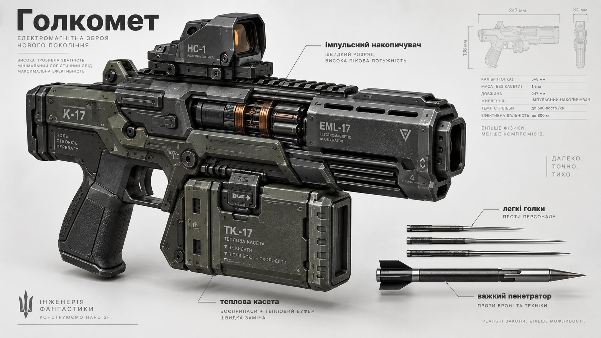

TECHNOLOGY 01 · WEAPONRY
Needle Launcher
A compact combat system built around high-velocity metal needles and modular weaponry.

The Needle Launcher is a compact weapon system that uses high-speed metal needles as its projectiles. Its design emphasises a modular weapon package and rapid projectile delivery.
This page presents the technology as described in the Kharakternyky setting; detailed performance parameters should be added only where established by the book's canon.